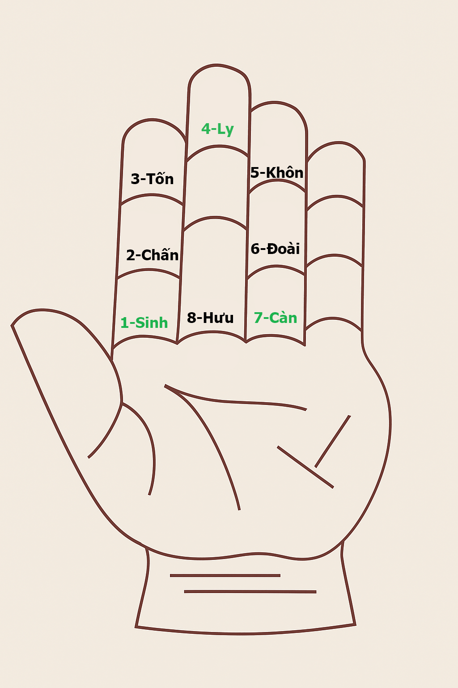

Nhập ngày và tháng
Đang tính ngày.
📜 Kết quả dựa theo tính toán của hình này

(Lưu ý: Công cụ này được xây dựng dựa trên các tài liệu về xem giờ tốt. Việc sử dụng là tùy thuộc vào quan điểm và sự lựa chọn cá nhân của mỗi người.)
Trang web hiện đã có phiên bản ứng dụng cài đặt trực tiếp, bạn có thể tải về bên dưới: